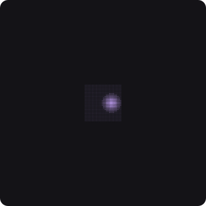
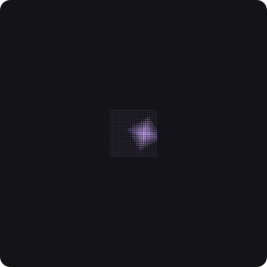
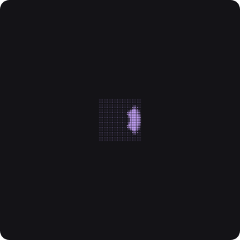
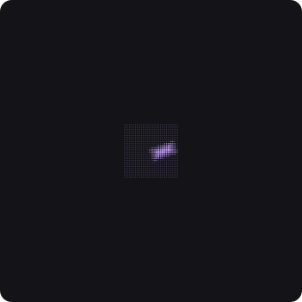
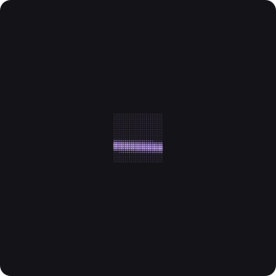

Nos três primeiros tutoriais tudo o que você fez aconteceu com todos os objetos ao mesmo tempo: todos andaram, todos giraram, todos dobraram. Este é sobre a pergunta que separa um brinquedo de uma ferramenta: e se eu quiser que só alguns respondam?
A resposta chama-se campo. Um campo não move nada — ele pesa cada objeto com um número entre 0 e 1, e o nó seguinte usa esse peso. Um objeto com peso 1 recebe o efeito inteiro; um com 0 fica exatamente como estava; e no meio há tudo o mais.

Falloff · Circle
Falloff · Rect
Radial SweepCole isto inteiro num terminal. Na primeira vez ele compila (alguns minutos); depois abre em segundos.
Abre uma tela escura com um pano de quadradinhos iguais, e uma mancha deles maior um pouco à direita do centro. A etiqueta «arraste ESTA alca» aponta para ela.
Se o pano inteiro estiver grande por igual, o campo não está a ser lido — confira
que copiou PH2D_GPU_COOK_DEMO=112.
Até este ciclo, o Falloff — o campo mais simples da casa — só se movia digitando números em dois controlos. Agora ele tem caixa no canvas, como qualquer objeto.
Falloff — o terceiro da fila, entre Scale e Remap.
Radius do cartão a mudar
junto.Falloff, na linha Shape, troque Circle por
Rect.
Rotation
aparece no cartão, que não estava lá antes.Rotation.
Rotation não tiver aparecido, você ainda está em
Circle — e ali ela está escondida de propósito: girar um círculo não muda nada.Rotation desaparece.Um campo não tem só forma — tem borda. É a diferença entre um recorte de tesoura e um pincel de aerógrafo.
Remap, arraste Curvature.
Multiplier.
Falloff responde
«onde» e o Remap responde «quanto». Separados, você pode
trocar a forma sem perder a curva, e reutilizar a mesma curva noutra forma.
Box
Index RangeFaltam dois, e os dois precisam de duas entradas:
A tabela abaixo é gerada do próprio app: ela lista o que cada cartão mostra quando você larga o nó, com a faixa e a unidade de cada controlo.
| controlo | faixa | unidade |
|---|---|---|
| Shape | Circle · Rect · Linear | |
| Curve | Linear · Quad · Smooth · Smoother | |
| Center X | -1000 a 1000 | px |
| Center Y | -1000 a 1000 | px |
| Radius | 0 a 2000 | px |
| Invert | liga / desliga | |
| Mask Channel | Falloff · Falloff Y |
Só noutro modo: Rotation aparece quando Shape é Rect ou Linear.
| controlo | faixa | unidade |
|---|---|---|
| Width | 0 a 4000 (digitável até 209715187.5) | px |
| Height | 0 a 4000 (digitável até 209715187.5) | px |
| Center X | -1000 a 1000 | px |
| Center Y | -1000 a 1000 | px |
| Rotation | -180 a 180 | deg |
| Softness | 0 a 1000 (digitável até 2000) | px |
| Curve | Linear · Quad · Smooth · Smoother | |
| Strength | -1 a 2 | |
| Invert | liga / desliga |
| controlo | faixa | unidade |
|---|---|---|
| Radius | 0 a 4000 (digitável até 209715187.5) | px |
| Start Angle | -360 a 360 | deg |
| End Angle | -360 a 360 | deg |
| Repetitions | 1 a 32 | |
| Angular Bias | 0 a 2 | |
| Inner Radius | 0 a 40 (digitável até 2097151.875) | |
| Center X | -1000 a 1000 | px |
| Center Y | -1000 a 1000 | px |
| Rotation | -180 a 180 | deg |
| Softness | 0 a 1 | |
| Curve | Linear · Quad · Smooth · Smoother | |
| Invert | liga / desliga |
| controlo | faixa | unidade |
|---|---|---|
| Start | 0 a 1 | |
| End | 0 a 1 | |
| Softness | 0 a 1 | |
| Curve | Linear · Quad · Smooth · Smoother | |
| Invert | liga / desliga | |
| Order By | Index · Attribute |
| controlo | faixa | unidade |
|---|---|---|
| Inner Offset | 0 a 1 | |
| Contour | None · Quadratic · Step · Quantize · Curve | |
| Curvature | -1 a 1 | |
| Min | 0 a 1 | |
| Max | 0 a 1 | |
| Multiplier | 0 a 4 | |
| Clamp | Off · Both · Min Only · Max Only | |
| Invert | liga / desliga | |
| Strength | 0 a 1 | |
| Probability | 0 a 1 | |
| Seed | 0 a 9999 |
Só noutro modo: Curve aparece quando Contour é Curve · Steps aparece quando Contour é Step ou Quantize · Curve Offset aparece quando Contour é Curve.
| controlo | faixa | unidade |
|---|---|---|
| Mode | Normal · Add · Subtract · Multiply · Screen · Min · Max · Overlay · Average | |
| Strength | 0 a 1 | |
| Clamp | liga / desliga |
| controlo | faixa | unidade |
|---|---|---|
| Path Mode | Filled Path · Path Edges | |
| Distance | 0 a 2000 | px |
| Curve | Linear · Quad · Smooth · Smoother | |
| Invert | liga / desliga |
Falloff a seguir ao primeiro:
os pesos multiplicam-se, e você fica com a intersecção das duas manchas.Scale na fila; troque o que vem depois do Remap por um
Rotate: agora a mancha faz os objetos girarem em vez de crescerem — o
campo é o mesmo, o efeito é outro.Falloff por um
Index Range: a mancha deixa de ser um lugar e passa a ser «do 3.º ao
10.º», que é o que faz uma onda percorrer uma fila.| o que você vê | o que é |
|---|---|
| O pano inteiro cresce por igual | o campo não está a ser lido — confira que o
Falloff está entre a grelha e o Scale na fila de
cartões |
Nenhuma caixa aparece ao clicar no Falloff | o cartão não está selecionado; clique no título dele |
A linha Rotation não existe | a forma é Circle — ali ela está escondida de propósito |
O Combine Fields ou o Shape Field não fazem nada e têm um
⚠ | falta a segunda entrada: ligue um campo na porta b, ou um
desenho na porta shape |
| A cena engasga com muitos objetos | o Shape Field é o único dos sete que não roda na placa de vídeo; com ele na fila, tudo volta para o processador |